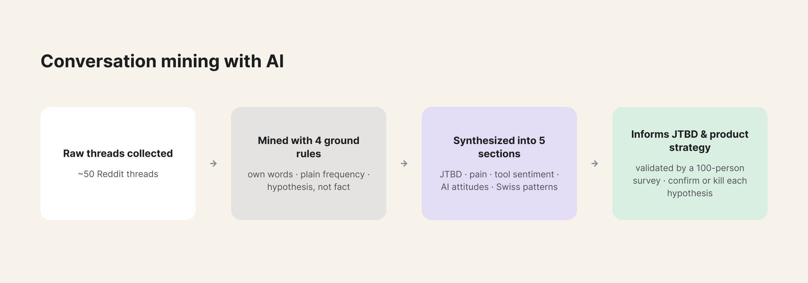
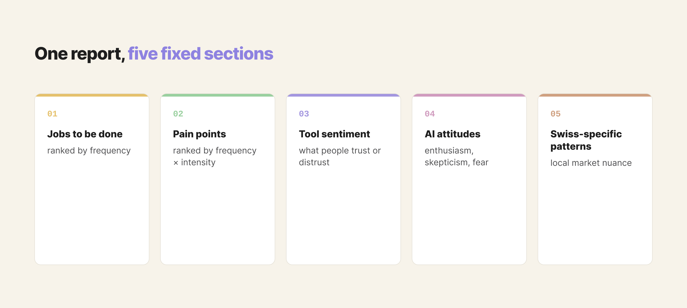
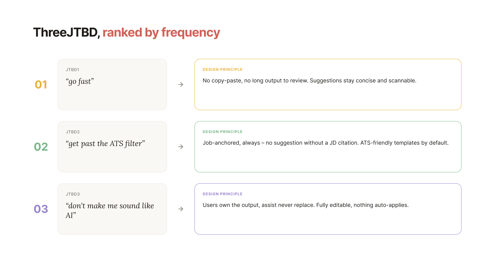
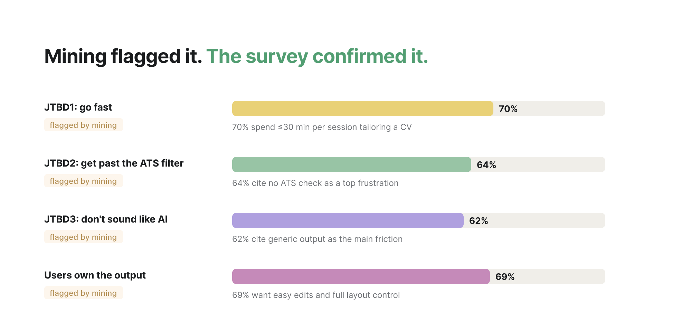

When we needed to define a new CV Optimizer feature, traditional discovery would have been slow and not necessarily representative of the Swiss market. So I mined Reddit with AI instead, structured the output to be actionable, and later ran it against a 100-person survey. The two were surprisingly close.
I used AI to mine roughly 50 Reddit threads, testing whether it could produce insight reliable enough to act on. Four rules kept the output honest:

The output followed a fixed structure: JTBD ranked by frequency, pain points ranked by frequency times intensity, tool sentiment, AI attitudes, and Swiss-specific patterns.

Three jobs to be done stood out: go fast, get past the ATS filter, and don't make me sound like AI. Each mapped directly to a design principle:
The concise-output principle is also the differentiator from general AI assistants like ChatGPT, Claude, Gemini, and Copilot, which tend to hand back a wall of text to review.

Conversation mining landed close to what the 100-person survey later found. Mining didn't replace the survey, it made the survey sharper: instead of fishing for open-ended pain points, it tested specific claims and came back with a clear confirm or kill on each.
Fast and informed don't have to be a tradeoff. Mining got us to design principles in days, not weeks, and when we checked them against 100 real job seekers, they mostly held up. If you're stuck with the same time pressure, don't just mine for insights, turn them into clear bets, then let your survey test those bets instead of starting from scratch.
{kind=link}
{kind=link}
{kind=link}